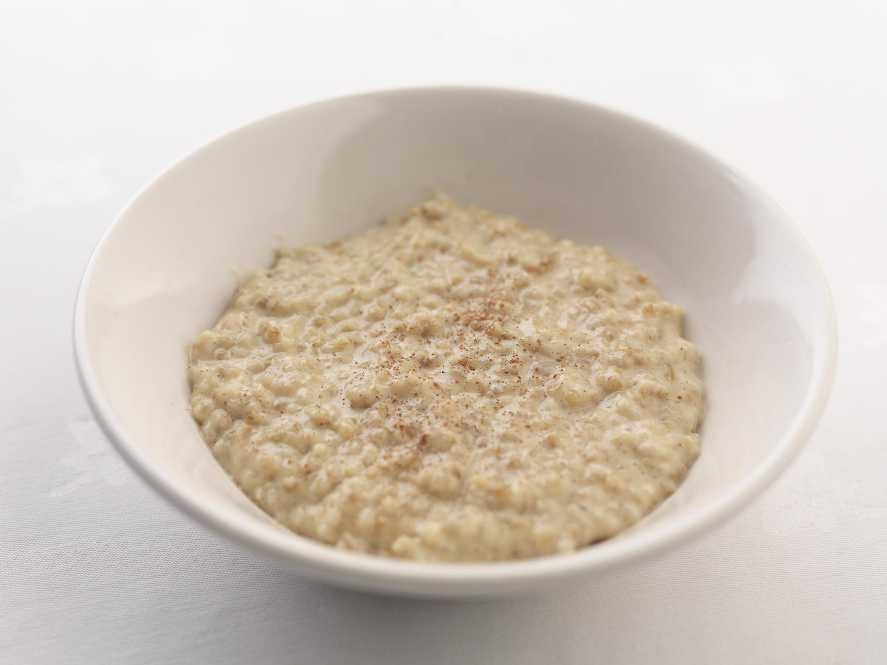

Porridge

Description:
Porridge is eaten for breakfast
It is made out of oats and milk
It is well boring
Ingredients:
- 50g Jumbo Porridge Oats
- 100ml Whole Milk
Steps:
- Stir together the oats and the milk over a medium heat
- Keep stiring until it gets all gloopy, usually abou0t 5-10 mins
- Spoon into a bowl and enjoy!
Back to Homepage